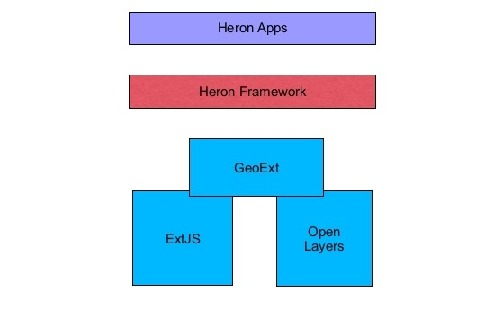

Auteur: Just van den Broecke, Just Objects B.V.
Datum: 18 oktober, 2013
Introductie
Dit document beschrijft de technische opzet en infrastructuur-vereisten voor de zogenaamde "KadViewer". De KadViewer is de werktitel voor een op het Heron-raamwerk gebaseerde webviewer. Deze is ontwikkeld als Proof-of-Concept (PoC) door Just Objects in opdracht van Kadaster PPI (Meindert Sterenberg/Peter Jansen) in de periode juli-okt 2013. De KadViewer is beschikbaar via de Kademo omgeving met het web adres: kadviewer.kademo.nl. Voornaamste doel was om te onderzoeken of een serie van door Kadaster PPI (Peter Jansen) opgestelde functionaliteiten konden worden gerealiseerd. Ook de impact op de bestaande IT-infrastructuur van Het Kadaster diende te worden uitgezocht en gedocumenteerd. Hieronder een screenshot van de KadViewer waarbij meerdere functies ten behoeve voorbeeld tegelijk geopend zijn.

Architectuur
Heron is een raamwerk voor het bouwen van een "GIS-Webclient", dat kan een Viewer zijn, maar in principe is alles mogelijk. Heron is zelf namelijk geen applicatie maar een conventie, voornamelijk via configuratie, om middels bestaande (JavaScript) componenten, meestal "Widgets" een applicatie samen te stellen. Voor deze componenten maakt Heron gebruik van voornamelijk de GeoExt bibliotheek. GeoExt zelf is weer gebaseerd op OpenLayers en ExtJS. OpenLayers voor kaart/laag-functies en ExtJS als algemeen GUI/Widget framework. Hierdoor kunnen zeer volledige/rijke "desktop-achtige" GIS-clients worden samengesteld. Zie figuur onder.

Omdat de ondersteunende blibliotheken niet alle functies bevatten en deze ieder de mogelijkheid hebben tot ontwikkelen/uitbreiden van eigen componenten als zgn "plugins" is Heron ook uitgebreid met eigen plugins (bijv WFS zoek panelen) maar gebruikt ook externe GeoExt en OpenLayers plugins. Voorbeeld eerste is GXP, een rijke widget-set. De OpenLayers Editor (OLE) wordt gebruikt voor de tekentool in de KadViewer. Alle componenten worden steeds op dezelfde conventie geconfigureerd om een Heron app samen te stellen. De KadViewer bevat dan ook geen specifieke custom code: de gehele app is samengesteld uit standaard Heron componenten. Wel zijn in het PoC traject een flink aantal nieuwe standaard componenten ontwikkeld. Zie ook figuur onder.

Meer over Heron is te lezen in de documentatie op: heron-mc.org/docs.html. Ook is daar een link naar een inleidende Heron presentatie.
Client Opzet
Op Heron-gebaseerde applicaties zoals de KadViewer zijn standaard HTML/JavaScript applicaties met een vaste structuur/opzet. De onderdelen hierbij zijn:
- Hoofdpagina
index.html, de enige pagina van de applicatie ("Single Page Webapp") - Heron Configuratie bestanden
.js files - Heron JavaScript-bibliotheek
- Heron externe JavaScript-bibliotheken zoals
OpenLayers - Statische content zoals CSS en HTML
Deze bestanden dienen via een standaard webserver geserveerd te worden. Externe bibliotheken en Heron zelf mogen
extern gehost worden. De gehele "applicatie" van de KadViewer bestaat in feite alleen uit index.html
en Heron Configuratie bestanden .js files en statische content bijvoorbeeld HTML help-files.
De KadViewer app bevat een enkele index.html waarin alle benodigde bestanden worden geimporteerd. Er is een
lege body. Dit is de gehele file:
<!DOCTYPE html PUBLIC "-//W3C//DTD XHTML 1.0 Transitional//EN"
"http://www.w3.org/TR/xhtml1/DTD/xhtml1-transitional.dtd">
<html xmlns="http://www.w3.org/1999/xhtml">
<head>
<meta http-equiv="Content-type" content="text/html;charset=UTF-8"/>
<title>KadViewer - Kadaster Heron Viewer Prototype</title>
<!-- External lib: ExtJS -->
<link rel="stylesheet" type="text/css"
href="http://cdnjs.cloudflare.com/ajax/libs/extjs/3.4.1-1/resources/css/ext-all.css"/>
<script type="text/javascript"
src="http://cdnjs.cloudflare.com/ajax/libs/extjs/3.4.1-1/adapter/ext/ext-base.js"></script>
<script type="text/javascript" src="http://cdnjs.cloudflare.com/ajax/libs/extjs/3.4.1-1/ext-all.js"></script>
<!-- External lib: Proj4JS (reproject lib) -->
<script src="http://cdnjs.cloudflare.com/ajax/libs/proj4js/1.1.0/proj4js-compressed.js" type="text/javascript"></script>
<!-- External lib: OpenLayers -->
<script type="text/javascript" src="http://cdnjs.cloudflare.com/ajax/libs/openlayers/2.12/OpenLayers.js"></script>
<link rel="stylesheet" type="text/css" href="http://cdnjs.cloudflare.com/ajax/libs/openlayers/2.12/theme/default/style.css"/>
<script type="text/javascript" src="http://cdnjs.cloudflare.com/ajax/libs/openlayers/2.12/lib/OpenLayers/Lang/nl.js"></script>
<!-- External lib: GeoExt -->
<script type="text/javascript" src="http://cdnjs.cloudflare.com/ajax/libs/geoext/1.1/script/GeoExt.js"></script>
<script type="text/javascript" src="http://lib.heron-mc.org/geoext/1.1/lib/overrides/override-ext-ajax.js"></script>
<script type="text/javascript" src="http://cdnjs.cloudflare.com/ajax/libs/geoext/1.1/lib/GeoExt/locale/GeoExt-nl.js"></script>
<!-- Script and css resources for printpreview ux (in Heron-ux.js) -->
<link rel="stylesheet" type="text/css"
href="http://lib.heron-mc.org/heron/latest/ux/printpreview/resources/css/printpreview.css"/>
<!-- External lib: GXP (in Heron-ux.js) -->
<link rel="stylesheet" type="text/css" href="http://lib.heron-mc.org/heron/latest/ux/gxp/git/src/theme/all.css"/>
<!-- External lib: Heron Mapping Client -->
<link rel="stylesheet" type="text/css" href="http://lib.heron-mc.org/heron/latest/resources/css/default.css"/>
<link rel="stylesheet" type="text/css" href="http://lib.heron-mc.org/heron/latest/resources/css/portal.css"/>
<!--[if IE]>
<link rel="stylesheet" type="text/css" href="http://lib.heron-mc.org/heron/latest/resources/css/portal-ie.css"/>
<![endif]-->
<link rel="stylesheet" href="http://lib.heron-mc.org/heron/latest/ux/oleditor/ole/client/theme/geosilk/geosilk.css" type="text/css"/>
<script type="text/javascript" src="http://lib.heron-mc.org/heron/latest/lib/i18n/nl_NL.js"></script>
<script type="text/javascript" src="http://lib.heron-mc.org/heron/latest/script/Heron-with-ux.js"></script>
<script type="text/javascript" src="http://lib.heron-mc.org/heron/latest/ux/printpreview/lib/locale/PrintPreview-nl.js"></script>
<!-- OpenLayers - System Settings -->
<script type="text/javascript">
Heron.globals.imagePath = 'http://lib.heron-mc.org/heron/latest/resources/images/';
</script>
<!-- Under development: copy from example until stable -->
<script type="text/javascript" src="VectorStyleWriter.js"></script>
<script type="text/javascript" src="VectorStylesDialog.js"></script>
<script type="text/javascript" src="http://lib.heron-mc.org/heron/latest/ux/gxp/git/src/script/locale/nl.js"></script>
<!-- Use default configuration -->
<script type="text/javascript" src="config/Map.js"></script>
<script type="text/javascript" src="config/Options.js"></script>
<script type="text/javascript" src="config/Layout.js"></script>
</head>
<body>
</body>
</html>
De specifieke externe bibliotheken die gebruikt worden zijn:
- OpenLayers 2.12
- ExtJS 3.4.1.1
- GeoExt 1.1
- Proj4js 1.1.0 (herprojectie bibliotheek)
- OLE Editor (tekentool)
- GXP - geavanceerde geo-widgets
- PrintPreview - GeoExt plugin voor Print Preview Window
- VectorStyleWriter.js en VectorStylesDialog.js zijn GXP extenties voor Vector Styling die in ontwikkeling zijn
KadViewer-specifiek zijn de drie configuratie files.
- Map.js - kaartlagen, "layer trees" en algemene kaart-eigenschappen
- Options.js - diverse opties, bijv. inhoud toolbar en formulieren
- Layout.js - de algemene layout van de gehele applicatie
Deze indeling is niet verplicht. Een Heron configuratie bestaat immers uit JavaScript structuren. Maar het is handig om bij grotere apps een dergelijke opsplitsing te maken.
Verder is er statische content tbv van de Help-functie en deze technische documentie. Deze staan allen
onder content/.
De gehele code is te vinden op https://code.google.com/p/geoext-viewer/source/browse/#svn%2Ftrunk%2Fapps%2Fkadviewer%2Fsite.
De Ant file build.xml is slechts bedoeld om snel te deployen tijdens ontwikkelen. Heeft verder geen functie: i.e. Heron/KadViewer hoeft niet "gebouwd" te worden. Hoewel in een produktie-omgeving deployment als .war file mogelijk is ten behoeve van deployment in OTAP omgeving.
Server Infrastructuur
Heron-gebaseerde applicaties zijn zoveel mogelijk op standaard geo-webdiensten (WMS, WFS, TMS, WMTS, later nog CSW en WPS) van het Open Geospatial Consortium (OGC) gebaseerd. Zie ook figuur onder. Daarnaast probeert Heron zoveel mogelijk functies aan de client-kant uit te voeren. Denk hierbij aan tekenen, kaartopmaak, Vector object rendering, eigen bookmarks etc. Ook werkt configuratie-beheer op basis van standaard tekst-bestanden die op elke webserver geplaatst kunnen worden. Ook zijn er geen akties die gebruikers doen binnen een Heron app die persistentie op een server vereisen. Tenzij hier expliciete componenten voor bijvoorbeeld feature editing en data upload naar een kaartserver worden ontwikkeld en ingezet, maar daar is bij de KadViewer nog geen sprake.

Een Heron app heeft dan ook minimaal een webserver (zoals Apache of MS IIS) nodig. Op deze webserver worden de verschillende bestanden waaruit een Heron applicatie bestaat, geplaatst. Dit betreft standaard web-bestanden zoals HTML, CSS en JavaScript bibliotheken. Deze laatsten, met name externe bibliotheken zoals OpenLayers, kunnen ook via een zogenaamd Content Delivery Network (CDN) gerefereerd worden. Dit heeft ook voordelen voor performance. Maar desgewenst, zie bijv. PDOK PreviewApp kan alles binnen een intranet gehost worden.
Deze bovenstaande aspecten zorgen ervoor dat een Heron applicatie een minimale infrastructuur nodig heeft. Externe OGC diensten zoals WMS, Tiling en WFS kunnen uit PDOK verkregen worden. Daarnaast kunnen eigen webdiensten bijvoorbeeld voor Kadastrale gegevens zelf opgezet worden en op de standaard manier gekoppeld worden. Dit laatste is voor de PoC gerealiseerd met de LKI WMS/WFS/Tiling services van de Kademo omgeving.
Toch zijn er drie web-gebaseerde diensten die benodigd zijn voor een aantal meer geavanceerde features (in figuur boven onder "Custom"). Hoewel Heron daarvoor implementaties levert, gaat het hierbij meer om (REST) protocol-afspraken die met elke technologie (Java, Python, PHP) gerealiseerd kunnen worden. Het gaat hierbij om de diensten "Proxy", "Upload/Download" en "Printing". Hier volgt een beschrijving.
1. Proxy
Een zogenaamde "Proxy" is nodig wanneer informatie requests ("AJAX Requests") vanuit JavaScript gedaan worden naar een ander internet-domein dan vanaf waar de applicatie geserveerd wordt. Dit is standaard bij de meeste geo-applicaties. Alleen wanneer alles zelf en van hetzelfde domein "gehost" wordt is een proxy niet nodig. Dit is bijvoorbeeld het geval bij PDOK PreviewApp. Deze en al haar gekoppelde kaartservices worden vanaf het domein 'geodata.nationaalgeoregister.nl' geserveerd en hebben daarom geen proxy nodig.
De Proxy functie is alleen nodig voor zogenaamde "AJAX Requests". Voor OGC-diensten is dit voor WFS en WMS GetFeatureInfo omdat deze (Vector) informatie via AJAX opvragen en teruggeven. Voor alle Raster requests zoals WMS GetMap en Tiling (TMS/WMTS) is een proxy niet nodig.
De Proxy functie wordt binnen OpenLayers (waarop heron is gebaseerd) automatisch aangeroepen en is dus geheel transparant (niet expliciet) binnen Heron. Ook ExtJS/GeoExt AJAX aanroepen worden automatisch via een Proxy geleid indien nodig.
Protocol
Het protocol zoals door OpenLayers met Server gebruikt is simpelweg:
<proxy-url>?url=<originele-url>
Hierbij is <proxy-url> het "proxy-script". Dus er dient een server-script (bijv. CGI, JSP of
Servlet) dat een request met die URL opvangt
het het HTTP request (GET of POST) doorsluist naar de <originele-url>.
Implementatie
Aan de Server kant wordt het bestand proxy.cgi geconfigureerd met
de toegestane hosts (om open proxy te voorkomen!). Hierbij is een Heron voorbeeld script in Python
binnen Apache geconfigureerd. Zie implementatie hier:
https://code.google.com/p/geoext-viewer/source/browse/trunk/heron/services/proxy.cgi.
Deze implementatie zou vrij simpel naar Java over te zetten zijn.
Aan de Client kant wordt in het KadViewer Options.js configuratie bestand
via de volgende regel de Proxy URL geconfigureerd:
OpenLayers.ProxyHost = "/cgi-bin/proxy.cgi?url=";
/cgi-bin/proxy.cgi is het proxy-script.
Verdere client-implementatie is in OpenLayers. In het bestand ext-override.js wordt binnen heron ook
alle ExtJS en GeoExt AJAX aanroepen via OpenLayers geleid
zodat deze ook via een Proxy gaan indien nodig.
2. Upload/Download
Upload/Download zoals bedoeld hier betreft niet zozeer een Upload/Download waarbij op een server bestanden worden opgeslagen en beheerd worden. Maar het betreft een manier/conventie om binnen een JavaScript web-client de mogelijkheid te hebben om data, in ons geval Vector data, binnen een bestaande web-pagina te brengen en te manipuleren. Binnen Heron/KadViewer zijn daarvoor een aantal voorbeelden.
De service download betreft hier de mogelijkheid om Vector data die binnen de applicatie gerenderd wordt bijv. in een tekening of "Feature Grid" tabel naar een lokaal bestand te downloaden. Ook moeten daarbij verschillende standaard formaten gebruikt worden, zoals GML, Excel en CSV. Hoewel de meeste conversies door Heron en OpenLayers uitgevoerd kunnen worden, blijft de uitdaging om ervoor te zorgen dat de gebruiker een "Save as... popup" krijgt waarbij deze data als bestand lokaal bewaard kan worden of zelfs binnen een applicatie zoals Excel direct geopend kan worden.
De "truc" hierbij is om de data naar een server te sturen in een 'hidden Form'. De server retourneert slechts die data maar plakt er gelijk "HTTP Headers" bij die het juiste "Mime-type" (bestandsoort) zetten en vooral de "Content-Disposition: attachment". Hierdoor wordt de browser getriggerd dat een bestand gedownload moet worden. Dit is een bekende methodiek en staat o.a. hier bescheven.
Protocol (Download)
Het download protocol is simpel. Een server dient een standaard web-formulier via POST evt GET te accepteren met daarbij de volgende 3 parameters:
filenamede filenaam die in "Attachment header" wordt gezet. Zorgt voor default filenaam bij gebruiker.mimehet mime-type dat gezet moet worden in HTTP headerdatade feitelijke data die geretourneerd moet worden, server doet daar niets mee (echo)encodinghoe de data encoded is, alleen 'base64' voorlopig. Om problemen met formulieren en tekens op te lossen. De server zal deze data dan decoden voor terugsturen.
Implementatie (Download)
Aan de server kant wordt binnen het heron.cgi script de volgende functie gebruikt
om de data "terug te echoën". Te zien is hoe daarbij de diverse parameters uit het protocol worden gebruikt.
# Echo data back to client forcing a download to file in the browser.
def download():
if not param_available(['mime', 'data', 'filename']):
return
# Get the form-based data values
filename = params.getvalue('filename')
mime = params.getvalue('mime')
data = params.getvalue('data')
encoding = params.getvalue('encoding', 'base64')
if encoding == 'base64':
data = base64.b64decode(data)
# Echo back to client
print('Content-Type: %s' % mime)
# Forces download in browser
print('Content-Disposition: attachment; filename="%s"' % filename)
print('')
print(data)
Het gehele server script (Python), ook voor upload is: https://code.google.com/p/geoext-viewer/source/browse/trunk/heron/services/heron.cgi
Aan de client kant wordt in Heron deze Heron-functie aangeroepen.
download: function (data, config) {
.
.
var form = Ext.DomHelper.append(
document.body,
{
tag: 'form',
id: 'hr_uploadForm',
method: 'post',
/** Heron CGI URL, see /services/heron.cgi. */
action: Heron.globals.serviceUrl,
children: [
{tag: 'input', type: 'hidden', name: 'data', value: data},
// Server sends HTTP Header: Content-Disposition: attachment; filename="%s"' % filename
{tag: 'input', type: 'hidden', name: 'filename', value: config.fileName},
{tag: 'input', type: 'hidden', name: 'mime', value: config.mimeType}
]
}
);
// Add Form to document and submit
document.body.appendChild(form);
form.submit();
},
Hierbij verwijst Heron.globals.serviceUrl naar het heron.cgi script (zowel voor upload als
download services). De kan net als the OpenLayers proxy host globaal geconfigureerd worden in bijv. Options.js.
De default is Heron.globals.serviceUrl = '/cgi-bin/heron.cgi'; maar kan dus ook naar bijv. een servlet verwijzen,
zolang het protocol maar gevolgd wordt. geldt ook later voor Upload service.
De service upload betreft hier de mogelijkheid om (Vector) data vanuit een lokaal bestand in een bestaande pagina te laden. Dit kan bijv. zijn uploaden naar "Kladlaag" of naar een tekening (redlining). Ook hier wordt geen opslag in de server gebruikt. Vanwege browser-restricties kunnen lokale bestanden nooit rechtstreeks in de browser worden geladen. Daarom wordt ook hier een server (-script) gebruikt om data op de juiste wijze "terug te echoën". Daarbij kan in sommige gevallen ook conversie worden gedaan, vooral wanneer de browser het formaat niet kan ondersteunen (Shape ZIP) of het geen echt geo-bestand is (CSV). De "truc" in dit geval is ook om een standaard File upload te doen (standaard browser formulier faciliteit) maar om niet de file op de server op te slaan maar terug te echoën en dan in de browser in een "hidden Iframe" op te vangen. Vervolgens kan deze data uit dat Iframe verkregen worden en in een laag (Kladlaag) of tekening geladen worden als Feature objecten.
Protocol (Upload)
Het upload protocol is ook simpel. Een server dient een standaard web-formulier via POST evt GET te accepteren met daarbij de volgende parameters:
filestandaard HTTP file objectmimehet mime-type dat gezet moet worden in HTTP headerencoding(optioneel) hoe de data encoded moet worden voor terugsturen, alleen 'escaped' als ondersteunde waarde. Dit ivm opslag in hidden Iframe van bijv. GML data (tags geven conflicten in browser).
Implementatie (Upload)
Aan de client kant moet een standaard file upload formulier opgesteld worden. Daarbij moet vooral de response opgevangen worden in een hidden Iframe. Dit is gerealiseerd binnen de OpenLayers extensie "OpenLayers Editor" (OLE) en gedoneerd aan dat project. Zie https://github.com/geops/ole/blob/master/lib/Editor/Control/UploadFeature.js.
Het gehele server script (Python), ook voor upload is: https://code.google.com/p/geoext-viewer/source/browse/trunk/heron/services/heron.cgi
Aan de server kant wordt deze functie aangeroepen. Allen voor Shape ZIP wordt
momenteel ogr2ogr aangeroepen om naar GeoJSON te converteren. Ook voor CSV
wordt geconverteerd om er een echt geo-bestand van te maken. Hierbij moeten in de CSV 'x' en 'y' kolommen zitten.
In de toekomst zou dergelijke "geoprocessing" functionaliteit beter via WPS moeten gaan verlopen.
# Echo uploaded file back to client as data.
def upload():
if not param_available(['mime', 'file']):
return
# Get the form-based data values
mime = params.getvalue('mime')
file_item = params['file']
encoding = params.getvalue('encoding', 'none')
# Start echo back
print('Content-Type: %s' % mime)
print('')
# Test if the file was uploaded
if file_item.filename:
data = file_item.value
# if the upload is a .zip file we assume a zipped ESRI Shapefile
# we convert it to GeoJSON, such that the client can read it
# The config in the Heron client (Upload or Editor) should then have an entry like:
# {name: 'ESRI Shapefile (1 laag, gezipped)', fileExt: '.zip', mimeType: 'text/plain', formatter: 'OpenLayers.Format.GeoJSON'}
f, file_ext = os.path.splitext(file_item.filename.lower())
if file_ext == '.zip' or file_ext == '.csv':
data = ogr2ogr(file_item, 'GeoJSON', file_ext)
if encoding == 'escape':
data = cgi.escape(data)
print(data)
else:
print(' ')
3. Printen
Printen wordt geheel gerealiseerd door de externe webapplicatie MapFish Printing (MFP). Op Kademo is een MapFish Print server ingericht en geconfigureerd voor onder andere de KadViewer. MFP is onderdeel van het bekende MapFish Framework. Binnen de Open Geo-ICT is MFP in feite de enige Print server voor op OGC-services gebaseerde kaartbeelden. MFP is een Java J2EE webapplicatie (.war) en zou dus prima in de Kadaster ICT-infrastructuur (bijv. PLP/JAP) passen.
Ook MFP is in feite een protocol afspraak: er is alleen een server waarmee een vast REST-protocol moet verlopen. Dit werkt in hoofdlijnen als volgt:
- client vraagt "print capabilities" aan MFP server
- MFP server retourneert (JSON) bestand met "capabilities", bijv. ondersteunde schalen, DPIs, en pagina Layouts
- client stuurt print opdracht: welke lagen, URLs, gebied, legenda's etc
- MFP verzamelt alle lagen door de OGC-services aan te roepen, alles in te tekenen
- MFP retourneert response met unieke URL naar de gegenereerde printout
- client ontvangt en saved of opent de URL in response meestal door openen van PDF in bijv Acrobat
Het mooie is dat ook Vector lagen, inclusief stijlen, kunnen worden geprint. Dit verloopt in het protocol met een upload van alle feature objecten en stijl want Vector layers kunnen ook lokaal, bijv. via tekenen of Upload zijn aangemaakt.
Alles gebeurt dus in feite aan de server kant door MFP. Het meeste werk betreft het
configureren van de print opmaak. Dit gaat in een zgn "YAML File".
Hierin kan de volledige layout en andere instellingen worden samengesteld.
Deze YAML file wordt gekoppeld aan een URL pad in web.xml.
Over bovenstaande is veel te vinden op de MapFish Printing (MFP) site. Voor de Kadviewer is er een standaard YAML file ingeregeld met formaten A4, A3 en A0 en beiden in portrait en landscape. Het ontwikkelen van een goede YAML file is het meest complexe onderdeel aan MFP.
Configureren Print URL
Hieronder fragment van web.xml waarin de YAML file wordt verwezen.
<servlet>
<servlet-name>mapfish.print.28992.kadviewer</servlet-name>
<servlet-class>org.mapfish.print.servlet.MapPrinterServlet</servlet-class>
<init-param>
<param-name>config</param-name>
<param-value>config.28992.kadviewer1.yaml</param-value>
</init-param>
</servlet>
<servlet-mapping>
<servlet-name>mapfish.print.28992.kadviewer</servlet-name>
<url-pattern>/pdf28992.kadviewer/*</url-pattern>
</servlet-mapping>
Meerdere URLS/YAMLs kunnen binnen een enkele MFP webapp worden opgezet. De YAML voor de KadViewer is hier te vinden: kademo.nl/print/config.28992.kadviewer1.yaml.
Protocol
Voorbeelden van berichten.
Print capabilites
{
"scales":
[
{"name": "1:250", "value": "250"},
{"name": "1:500", "value": "500"},
{"name": "1:1,000", "value": "1000"},
{"name": "1:2,500", "value": "2500"},
{"name": "1:5,000", "value": "5000"},
{"name": "1:10,000", "value": "10000"},
{"name": "1:20,000", "value": "20000"},
{"name": "1:40,000", "value": "40000"},
{"name": "1:75,000", "value": "75000"},
{"name": "1:150,000", "value": "150000"},
{"name": "1:300,000", "value": "300000"},
{"name": "1:625,000", "value": "625000"},
{"name": "1:1,250,000", "value": "1250000"},
{"name": "1:2,500,000", "value": "2500000"},
{"name": "1:5,000,000", "value": "5000000"},
{"name": "1:10,000,000", "value": "10000000"}
],
"dpis":
[
{"name": "300", "value": "300"}
],
"outputFormats":
[
{"name": "raw"},
{"name": "btiff"},
{"name": "tif"},
{"name": "jpeg"},
{"name": "pdf"},
{"name": "jpeg2000"},
{"name": "jpeg-ls"},
{"name": "jpeg-lossless"},
{"name": "ascii grass"},
{"name": "ascii arcinfo"},
{"name": "bmp"},
{"name": "jpg"},
{"name": "pnm"},
{"name": "wbmp"},
{"name": "jfif"},
{"name": "png"},
{"name": "jpeg 2000"},
{"name": "arcgrid"},
{"name": "gif"},
{"name": "tiff"}
],
"layouts":
[
{"name": "A0 Landscape", "map": {"width": 3316, "height": 2332}, "rotation": true},
{"name": "A3 Landscape", "map": {"width": 1005, "height": 780}, "rotation": true},
{"name": "A3 Portrait", "map": {"width": 780, "height": 1020}, "rotation": true},
{"name": "A4 Landscape", "map": {"width": 675, "height": 542}, "rotation": true},
{"name": "A4 Portrait", "map": {"width": 535, "height": 700}, "rotation": true}
],
"printURL":
"http://kademo.nl/print/pdf28992.kadviewer/print.pdf",
"createURL":
"http://kademo.nl/print/pdf28992.kadviewer/create.json"
}
Print opdracht:
{"units":"m",
"srs":"EPSG:28992",
"layout":"A4 portrait",
"dpi":56,
"mapTitle":"Heron Printing Demo",
"mapComment":"This is a simple map printed from GeoExt.",
"layers":[
{"baseURL":"http://geodata.nationaalgeoregister.nl/tms/",
"opacity":1,
"singleTile":false,
"type":"TMS",
"layer":"brtachtergrondkaart",
"maxExtent":[-285401.92,22598.08,595401.92,903401.92],
"tileSize":[256,256],
"resolutions":[3440.64,1720.32,860.16,430.08,215.04,107.52,53.76,26.88,13.44,6.72,3.36,1.68,0.84,0.42,0.21,0.105],"format":"png"}
],"pages":[
{"center":[122744,485794.24],
"scale":768000,
"rotation":0}
]}
Voorbeeld response
{"getURL":"http://kademo.nl/print/pdf28992.kadviewer/964385122042115028.pdf.printout"}
Limitaties
Er zitten wat limitaties aan MFP. Vooral legenda's, vector lagen en A0 formaat.
Samenvatting Impact Kadaster ICT Infra
Samengevat kan het volgende gesteld worden, als het gaat om ontwikkeling/uitrol binnen Kadaster ICT omgeving, bijv PLP/JAP.
Client
Deze bestaat uit statische HTML/JavaScript/CSS files. Heeft alleen een webserver nodig. Keuze bestaat om alle externe bibliotheken zelf te hosten of via een CDN, of beter een interne CDN.
Server
Hierbij kan de volgende opdeling worden gemaakt, ieder met impact uitgaande van een Java J2EE backend.
- WMS/WFS/Tiling services: standaard, via PDOK of eigen interne services, geen impact
- LKI WFS: moet aanwezig zijn, ook hulptabellen voor autosuggest search, kan evt met lokaal bestand
- Proxy service: kan simpel in servlet of JSP geimplementeerd, is eerder in PDOK ook gedaan, lage impact
- Download service: kan in servlet geimplementeerd, lage impact
- Upload service: kan in servlet geimplementeerd, impact evt in aanroep 'ogr2ogr' en tempfile benodigd , kan via Exec functie
- Print service (MapFish Print): standaard distributie gebruiken, werk zit in YAML config. Ook veel geheugen nodig.
Dit bovenstaande zou met niet al te hoge inspanning in een standaard J2EE omgeving zoals PLP/JAP te realiseren moeten zijn.
Links en Referenties
- heron-mc.org - Heron algemene website
- Heron Project website
- kademo.nl - Kademo Lab algemene Website
- rdinfo.kademo.nl - Heron voorbeeld: RDInfo PoC
- pdokviewer.pdok.nl - Heron app: PDOK Publieke Viewer
- http://geodata.nationaalgeoregister.nl/apps/preview - Heron app:PDOK PreviewApp (whitelisted)
- MapFish Print Server